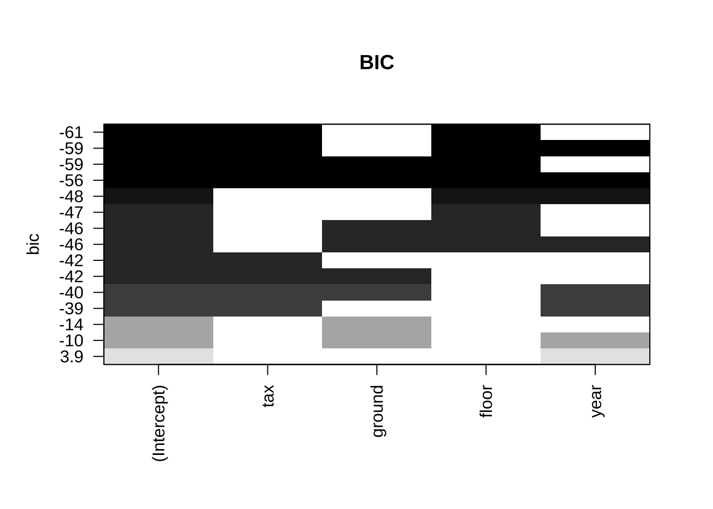
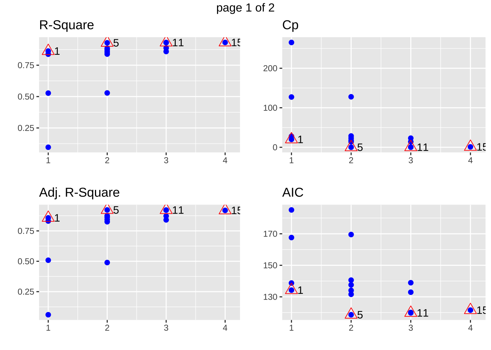
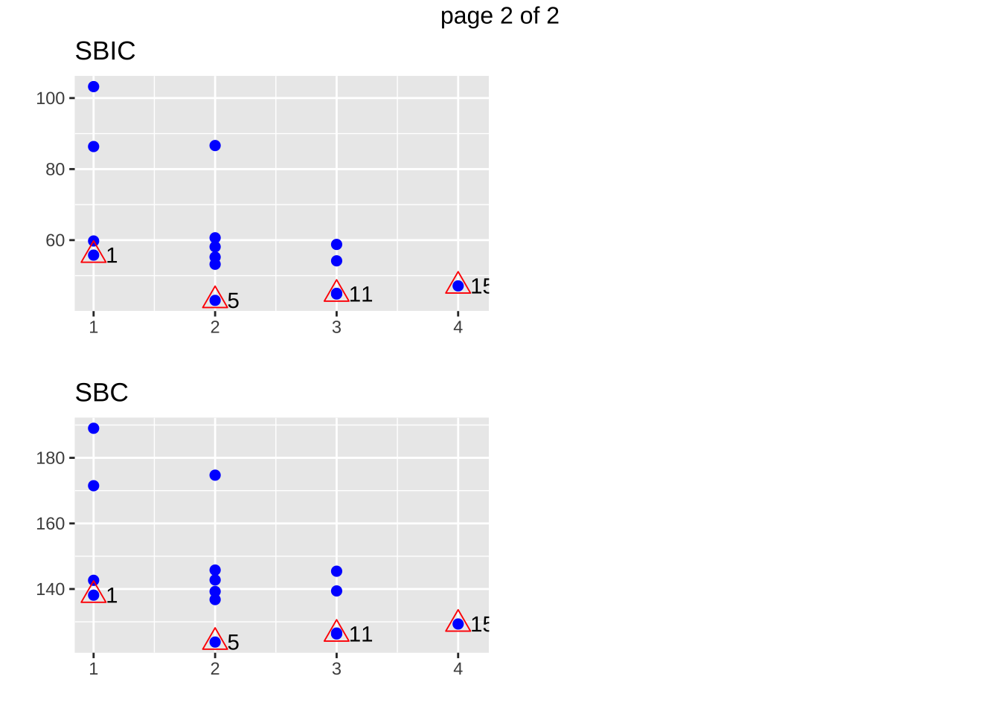
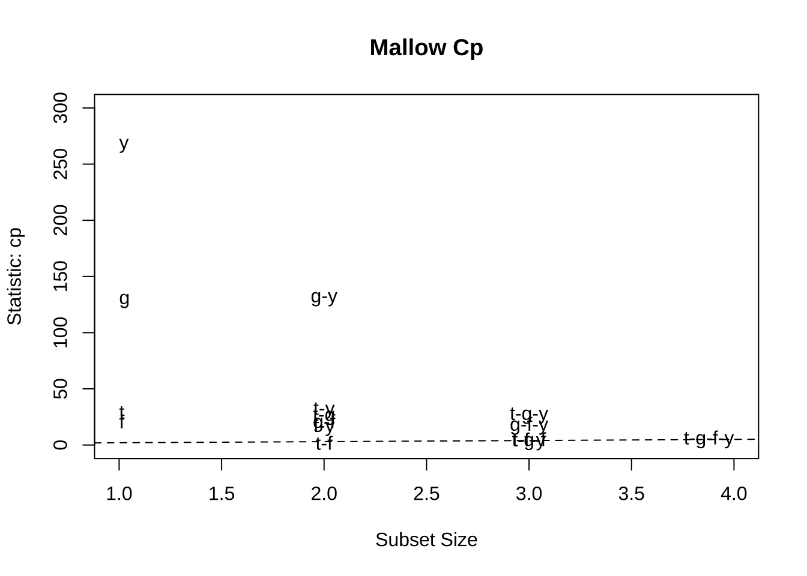
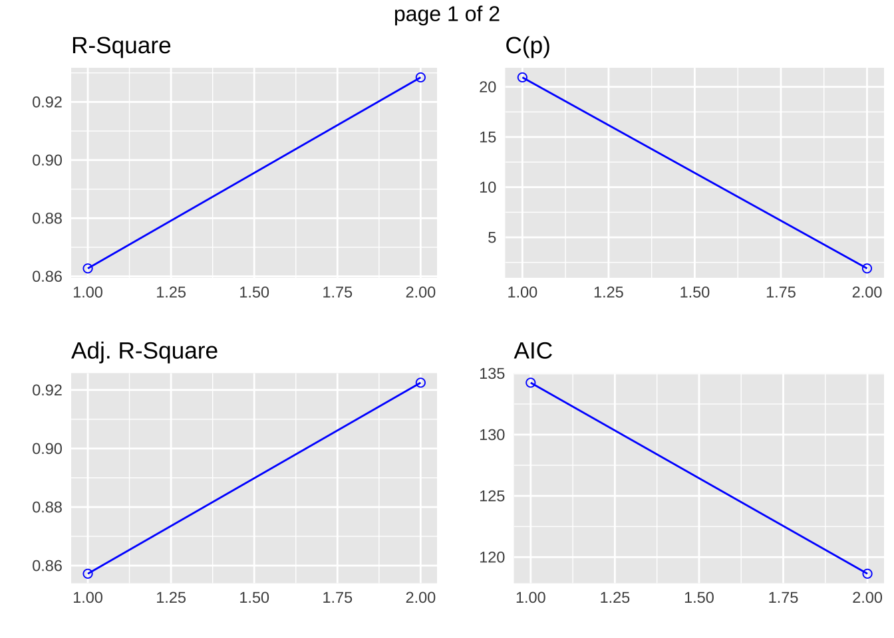
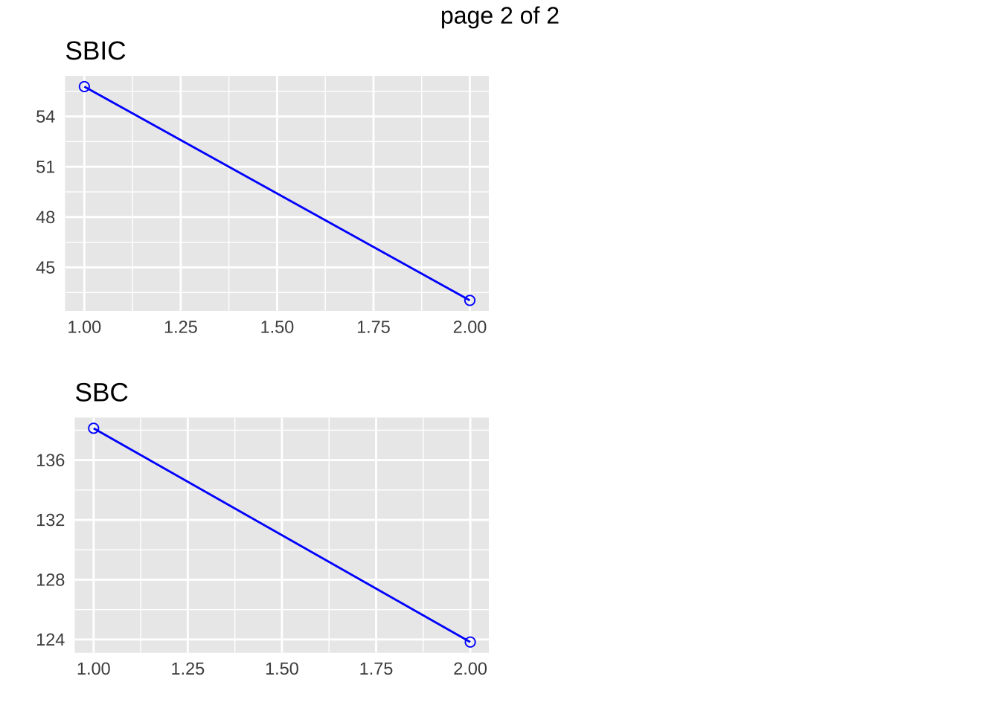
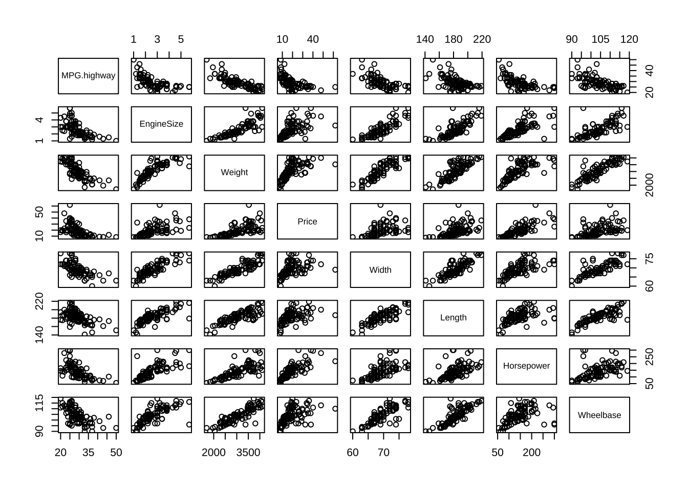
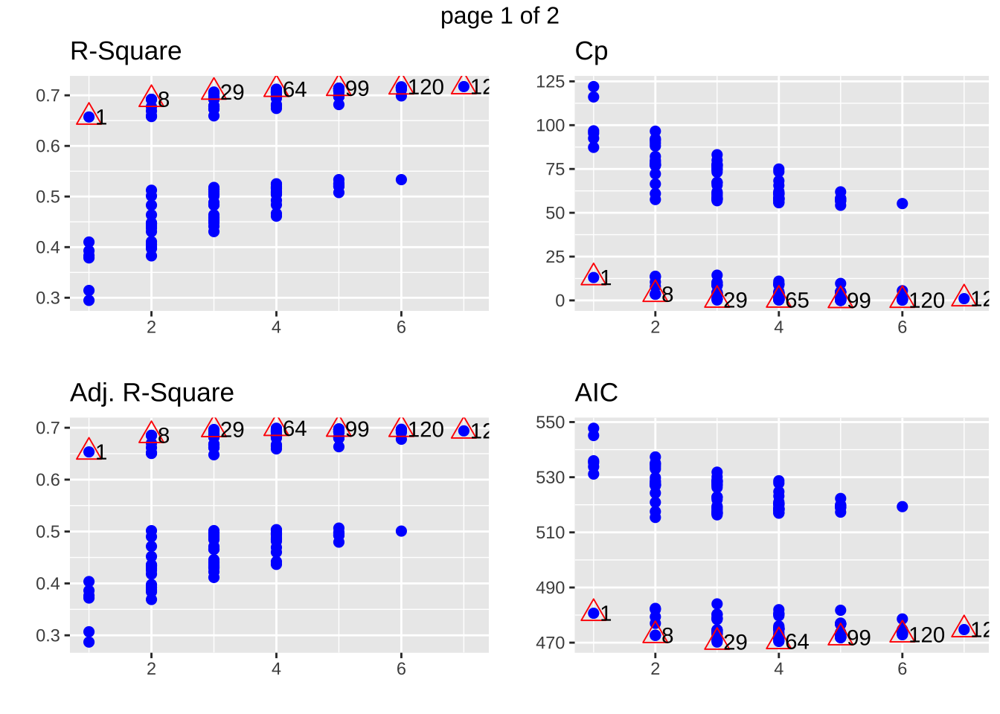
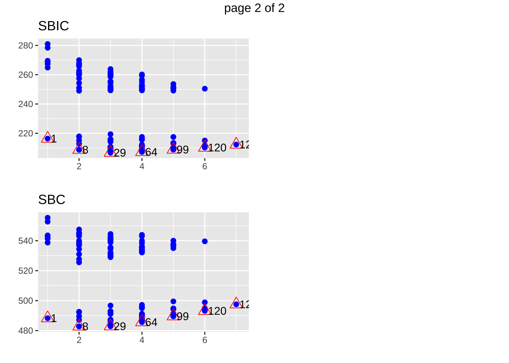
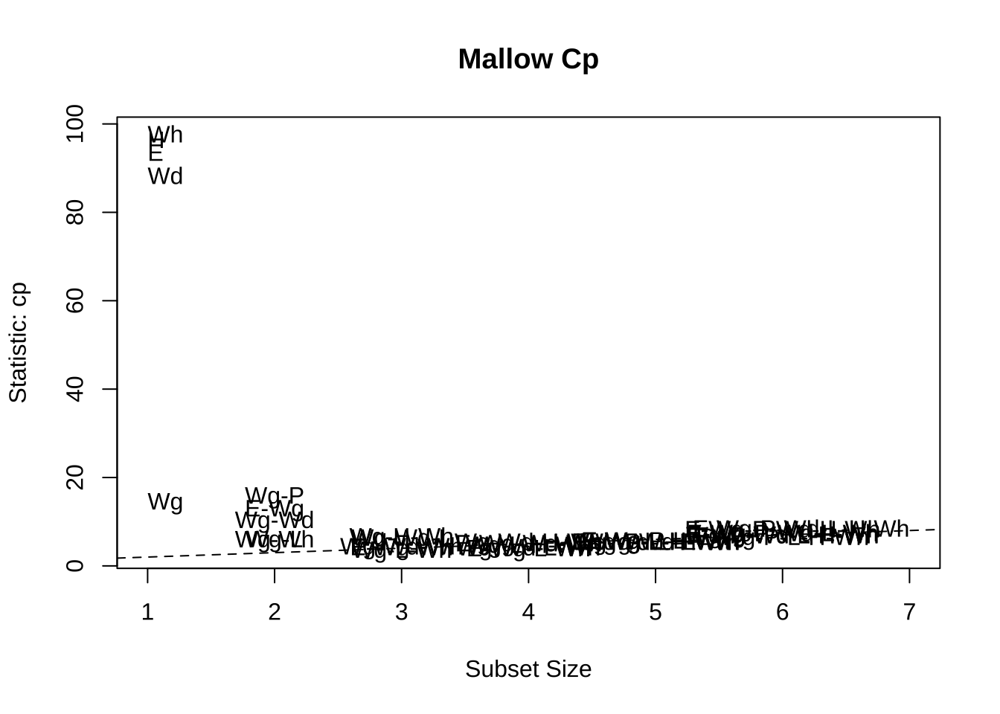

제 8 장 회귀모형의 선택
8.1 변수선택의 기준
패키지 leap 에 수록된 regsubsets() 함수를 이용하면 가능한 모든 모형에 대한 중요한 선택 기준들이
게산된다.
- `rss``: 잔차 제곱합
rsq: \(R^2\)adjr2: 수정된 \(R^2\)cp: 맬로우의 \(C_p\)bic: BIC
교재 예제에 나타난 자료 houseprice는 독립변수의 수가 4개이므로 가능한 회귀식의 개수가 \(2^4=16\)개이므로 이러한 방법을 적용할 수 있다. 하지만 독립변수의 수가 10개만 되고 가능한 회귀식의 수가 1024개나 되고 20개가 모형의 수가 100만개가 넘으므로 이들 모두에 대한 통계량을 계산하는 것은 실제로 쉽지않다.
이제 예제 자료 houseprice에 대하여 regsubsets함수를 사용하여 가능한 회귀식을 모두 적합하고 각 식에 대한 모형선택의 기준값을 계산해보자. regsubsets함수에서 nbest=6는 독립변수의 수가 같은 모형들 중에서 가장 좋은 6개의 모형만을 보여주라는 명령문이다.
모든 가능한 회귀식에 대한 통계량은 summaryf함수를 통하여 볼 수 있다.
houseprice.rgs <- regsubsets(price ~ . , data=houseprice, nbest=6)
summaryf(houseprice.rgs)## tax ground floor year rss rsq adjr2 cp bic
## 1 ( 1 ) * 182.66315 0.86271916 0.85722792 20.943616 -47.022941
## 1 ( 2 ) * 215.97764 0.83768158 0.83118885 28.958146 -42.499601
## 1 ( 3 ) * 628.61671 0.52756188 0.50866435 128.227503 -13.654236
## 1 ( 4 ) * 1202.47186 0.09627993 0.06013112 266.280912 3.858312
## 2 ( 1 ) * * 95.19550 0.92845564 0.92249361 1.901360 -61.323304
## 2 ( 2 ) * * 153.80917 0.88440442 0.87477146 16.002160 -48.369244
## 2 ( 3 ) * * 168.58785 0.87329747 0.86273892 19.557496 -45.892146
## 2 ( 4 ) * * 191.93607 0.85575007 0.84372925 25.174420 -42.390102
## 2 ( 5 ) * * 214.64151 0.83868576 0.82524290 30.636710 -39.371316
## 2 ( 6 ) * * 626.80968 0.52891996 0.48966329 129.792782 -10.436125
## 3 ( 1 ) * * * 92.31936 0.93061720 0.92156727 3.209442 -58.855794
## 3 ( 2 ) * * * 93.26197 0.92990878 0.92076645 3.436208 -58.581513
## 3 ( 3 ) * * * 150.10029 0.88719183 0.87247773 17.109908 -45.732450
## 3 ( 4 ) * * * 187.51305 0.85907420 0.84069258 26.110366 -39.723741
## 4 ( 1 ) * * * * 91.44876 0.93127151 0.91877542 5.000000 -55.815783위의 결과를 보면 두 개의 변수 tax와 floor가 포함된 회귀식이 다음과 같은 통계량으로 가장 좋은 모형으로 나타난다.
rss: 잔차제곱합(residual sum of square), \(SSE = 95.20\)rsq: 결정계수(\(R^2_p\)), \(R^2=0.92846\)adjr2: 수정된 결정계수(\(R^2_{ap}\)), \(R^2_a=0.92249\)cp: 맬로우즈 \(C_p\), \(C_p = 1.901\)bic: BIC(Bayesian Information Criteria), \(BIC= -61.323\)
다음은 변수들이 포함되어 나타나는 선택된 기준의 값을 그림으로 표시한 것이다. Y 축은 선택 기준의 값이고 X축은 변수들의 포함 여부을 나타낸다.
plot(houseprice.rgs , scale = "bic", main = "BIC")
패키지 olsrr에 있는 함수 ols_step_all_possible()을 이용하면 가능한 모등회귀에 대한
통계량을 구하고 여러 가지 통계량에 대한 그림을 plot() 함수를 이용하여 쉽게 그릴 수 있다.
fit1 <- lm(price ~ ., data=houseprice)
houseprice.rgs2 <- ols_step_all_possible(fit1)
houseprice.rgs2## Index N Predictors R-Square Adj. R-Square Mallow's Cp
## 3 1 1 floor 0.86271916 0.85722792 20.943616
## 1 2 1 tax 0.83768158 0.83118885 28.958146
## 2 3 1 ground 0.52756188 0.50866435 128.227503
## 4 4 1 year 0.09627993 0.06013112 266.280912
## 6 5 2 tax floor 0.92845564 0.92249361 1.901360
## 10 6 2 floor year 0.88440442 0.87477146 16.002160
## 8 7 2 ground floor 0.87329747 0.86273892 19.557496
## 5 8 2 tax ground 0.85575007 0.84372925 25.174420
## 7 9 2 tax year 0.83868576 0.82524290 30.636710
## 9 10 2 ground year 0.52891996 0.48966329 129.792782
## 13 11 3 tax floor year 0.93061720 0.92156727 3.209442
## 11 12 3 tax ground floor 0.92990878 0.92076645 3.436208
## 14 13 3 ground floor year 0.88719183 0.87247773 17.109908
## 12 14 3 tax ground year 0.85907420 0.84069258 26.110366
## 15 15 4 tax ground floor year 0.93127151 0.91877542 5.000000plot(houseprice.rgs2)
맬로우의 \(C_p\) 를 나타내는 방법은 아래와 같이 선택된 독립변수의 개수에서 \(y=x\) 측에 가까운 값을 가진 모형이 좋은 모형이다.
subsets(houseprice.rgs, statistic="cp", legend = F, min.size = 1, main = "Mallow Cp",ylim=c(0,300))## Abbreviation
## tax t
## ground g
## floor f
## year yabline(a = 1, b = 1, lty = 2)
PRESS 잔차는 함수 press() 로 구할 수 있다.
\[ PRESS_p = \sum_{i=1}^n ( y_i - \hat y_{i(i)})^2 \]
또한 교과서 264 페이지에 나온 교차확인(cross validation)에 의거한 \(R^2_{pred}\) 은 다음과 같이 계산되며 press() 함수에 의해 주어진다.
\[ R^2_{pred} = 1 - \frac{PRESS_p}{SST} \]
press(houseprice.rgs)## tax ground floor year PRESS pred.r.squared
## 1 ( 1 ) * 220.8853 0.8339932
## 1 ( 2 ) * 316.0868 0.7624443
## 1 ( 3 ) * 838.8121 0.3695891
## 1 ( 4 ) * 1430.6084 0.0000000
## 2 ( 1 ) * * 144.3991 0.8914766
## 2 ( 2 ) * * 207.6594 0.8439331
## 2 ( 3 ) * * 233.7615 0.8243161
## 2 ( 4 ) * * 358.2145 0.7307832
## 2 ( 5 ) * * 341.4294 0.7433981
## 2 ( 6 ) * * 911.3553 0.3150691
## 3 ( 1 ) * * * 153.5941 0.8845661
## 3 ( 2 ) * * * 159.1752 0.8803716
## 3 ( 3 ) * * * 233.2240 0.8247200
## 3 ( 4 ) * * * 380.1744 0.7142792
## 4 ( 1 ) * * * * 170.4810 0.87187478.2 이상치를 제거한 경우
교과서에서 분석하였듯이 9,10,27 번째 자료가 이상점 또는 영향점일 가능성이 높으므로 이를 제거하고 모형의 선택 기준을 다시 계산해 보자.
housepriceEX <- houseprice[-c(9,10,27),]
housepriceEX.rgs <- regsubsets(price ~ . , data=housepriceEX, nbest=6)
summaryf(housepriceEX.rgs)## tax ground floor year rss rsq adjr2 cp bic
## 1 ( 1 ) * 48.17790 0.7675502 0.7569843 0.2458362 -28.661838
## 1 ( 2 ) * 102.73566 0.5043188 0.4817878 23.1726808 -10.487628
## 1 ( 3 ) * 125.87070 0.3926964 0.3650917 32.8947363 -5.613326
## 1 ( 4 ) * 174.34503 0.1588164 0.1205808 53.2651405 2.205420
## 2 ( 1 ) * * 46.18667 0.7771576 0.7559345 1.4090560 -26.496810
## 2 ( 2 ) * * 47.39011 0.7713512 0.7495751 1.9147822 -25.879469
## 2 ( 3 ) * * 48.11577 0.7678500 0.7457405 2.2197243 -25.514758
## 2 ( 4 ) * * 83.74651 0.5959380 0.5574559 17.1928590 -12.214327
## 2 ( 5 ) * * 85.27968 0.5885408 0.5493542 17.8371405 -11.778929
## 2 ( 6 ) * * 116.96847 0.4356480 0.3819002 31.1537464 -4.195690
## 3 ( 1 ) * * * 45.62514 0.7798669 0.7468469 3.1730851 -23.612331
## 3 ( 2 ) * * * 45.69348 0.7795371 0.7464677 3.2018056 -23.576407
## 3 ( 3 ) * * * 47.34784 0.7715551 0.7372884 3.8970174 -22.722834
## 3 ( 4 ) * * * 74.63053 0.6399210 0.5859092 15.3620431 -11.802150
## 4 ( 1 ) * * * * 45.21326 0.7818541 0.7359287 5.0000000 -20.651921press(housepriceEX.rgs)## tax ground floor year PRESS pred.r.squared
## 1 ( 1 ) * 56.10399 0.72930829
## 1 ( 2 ) * 117.36430 0.43373824
## 1 ( 3 ) * 157.83378 0.23848023
## 1 ( 4 ) * 202.40162 0.02344834
## 2 ( 1 ) * * 57.66354 0.72178375
## 2 ( 2 ) * * 64.24819 0.69001399
## 2 ( 3 ) * * 63.42708 0.69397570
## 2 ( 4 ) * * 108.09369 0.47846724
## 2 ( 5 ) * * 114.27185 0.44865875
## 2 ( 6 ) * * 160.37982 0.22619605
## 3 ( 1 ) * * * 68.98320 0.66716837
## 3 ( 2 ) * * * 65.44694 0.68423019
## 3 ( 3 ) * * * 72.26745 0.65132247
## 3 ( 4 ) * * * 109.76504 0.47040332
## 4 ( 1 ) * * * * 79.24660 0.617649308.3 변수선택 방법
회귀식에서 변수를을 선택할 때 가장 큰 모형을 적합시키면 각 변수에 대한 중요도를 각 회귀계수에 대한 가설 검정 \(H_o: \beta_i=0\)에 대한 t-통계량을 보고 판단할 수 있다.
summary(fit1)##
## Call:
## lm(formula = price ~ ., data = houseprice)
##
## Residuals:
## Min 1Q Median 3Q Max
## -3.4891 -1.3574 0.1337 1.0686 3.4938
##
## Coefficients:
## Estimate Std. Error t value Pr(>|t|)
## (Intercept) 1.21874 2.04661 0.595 0.55759
## tax 0.05195 0.01383 3.756 0.00109 **
## ground 0.01159 0.02534 0.458 0.65169
## floor 0.34941 0.07268 4.807 8.41e-05 ***
## year -0.21894 0.33149 -0.660 0.51582
## ---
## Signif. codes: 0 '***' 0.001 '**' 0.01 '*' 0.05 '.' 0.1 ' ' 1
##
## Residual standard error: 2.039 on 22 degrees of freedom
## Multiple R-squared: 0.9313, Adjusted R-squared: 0.9188
## F-statistic: 74.53 on 4 and 22 DF, p-value: 1.817e-12위는 4개의 독립변수를 포함한 가장 큰 모형에 대하여 각 계수의 유의성 검정에 대한 결과이다.
변수 floor가 가장 유의한 변수이고 다음으로 tax가 유의함을 알 수 있다. 또한
2개의 변수 year와 ground는 유의하지 않음을 알 수 있다.
이렇게 독립변수들은 반응변수를 설명하는 정도가 다르므로 모든 가능한 회귀식을 적합하여 모형을 선택하는 것보다 변수의 중요도를 고려하여 변수들을 유의한 정도에 따라 차례로 모형에 포함시키거나 제거하는 절차가 더 효율적이다. 이렇게 가장 단순한 모형(평균모형)에서 시작하여 설명력이 높은 변수들을 순차적으로 포함시키거나(forward selection; 전진선택) 가장 큰 모형(full model)에서 시작하여 설명력이 낮은 변수들을 차례로 제거하는 방법(backward elimination; 후방제거)을 단계별 회귀(stepwise regression)이라고 한다.
단계별 회귀는 다음과 같은 세 가지 방법이 있다.
- 전진선택 (forward selection)
- 후방제거 (backward elimination)
- 단계별 선택 (stepwise selection)
단계별 선택은 전진선택과 후방제거를 결합한 형태로서 새로운 변수가 추가되는 경우마다(전진선택) 제거할 변수를 있는지 판단하여 유의하지 않다면 제거하는(후방제거) 방법이다.
8.3.1 단계별 선택의 적용
단계별 선택에서 전진선택과 후방제거는 add1()와 drop1()함수를 사용한다.
8.3.1.1 평균모형
model0 <- lm(price~1, houseprice)
summary(model0)##
## Call:
## lm(formula = price ~ 1, data = houseprice)
##
## Residuals:
## Min 1Q Median 3Q Max
## -6.300 -4.275 -0.800 1.125 23.200
##
## Coefficients:
## Estimate Std. Error t value Pr(>|t|)
## (Intercept) 19.250 1.377 13.98 1.32e-13 ***
## ---
## Signif. codes: 0 '***' 0.001 '**' 0.01 '*' 0.05 '.' 0.1 ' ' 1
##
## Residual standard error: 7.154 on 26 degrees of freedom8.3.1.2 첫번째 변수의 추가
이제 가장 설명력있는 변수를 추가하는데 다음과 같은 2개의 모형을 비교하는 부분 F 검정을 이용하여 가장 유의한 변수를 추가한다.
\[ H_0: y=\beta_0 + \epsilon \quad \text{vs} \quad y=\beta_0 + \beta_1 x_i + \epsilon \]
add1(model0, scope=~tax+ ground+ floor+ year, test="F")## Single term additions
##
## Model:
## price ~ 1
## Df Sum of Sq RSS AIC F value Pr(>F)
## <none> 1330.58 107.233
## tax 1 1114.60 215.98 60.142 129.0183 2.310e-11 ***
## ground 1 701.96 628.62 88.987 27.9170 1.792e-05 ***
## floor 1 1147.92 182.66 55.619 157.1084 2.807e-12 ***
## year 1 128.11 1202.47 106.500 2.6634 0.1152
## ---
## Signif. codes: 0 '***' 0.001 '**' 0.01 '*' 0.05 '.' 0.1 ' ' 1위의 결과에서 가장 유의한 변수가 floor이므로 회귀식에 추가한다. 변수를 추가하는 경우는 고려하는 변수를 포함한 모형과 포함하지 않는 모형이 가장 유의한 차이를 보이는 변수를 선택한다.
model1 <- update(model0, . ~ . + floor)
summary(model1)##
## Call:
## lm(formula = price ~ floor, data = houseprice)
##
## Residuals:
## Min 1Q Median 3Q Max
## -4.6682 -2.1916 -0.1459 2.0517 4.9644
##
## Coefficients:
## Estimate Std. Error t value Pr(>|t|)
## (Intercept) 1.25296 1.52716 0.82 0.42
## floor 0.59511 0.04748 12.53 2.81e-12 ***
## ---
## Signif. codes: 0 '***' 0.001 '**' 0.01 '*' 0.05 '.' 0.1 ' ' 1
##
## Residual standard error: 2.703 on 25 degrees of freedom
## Multiple R-squared: 0.8627, Adjusted R-squared: 0.8572
## F-statistic: 157.1 on 1 and 25 DF, p-value: 2.807e-12위에서 update() 함수는 앞에서 적합한 모형 model0에 변수 floor를 추가한다.
8.3.1.3 두 번째 변수의 추가
add1(model1, scope=~tax+ ground+ floor+ year, test="F")## Single term additions
##
## Model:
## price ~ floor
## Df Sum of Sq RSS AIC F value Pr(>F)
## <none> 182.663 55.619
## tax 1 87.468 95.195 40.023 22.0517 8.997e-05 ***
## ground 1 14.075 168.588 55.454 2.0037 0.16976
## year 1 28.854 153.809 52.977 4.5023 0.04437 *
## ---
## Signif. codes: 0 '***' 0.001 '**' 0.01 '*' 0.05 '.' 0.1 ' ' 1model2 <- update(model1, . ~ . + tax)
summary(model2)##
## Call:
## lm(formula = price ~ floor + tax, data = houseprice)
##
## Residuals:
## Min 1Q Median 3Q Max
## -3.009 -1.658 0.048 1.220 3.548
##
## Coefficients:
## Estimate Std. Error t value Pr(>|t|)
## (Intercept) 0.39497 1.13994 0.346 0.732
## floor 0.34835 0.06313 5.518 1.13e-05 ***
## tax 0.05742 0.01223 4.696 9.00e-05 ***
## ---
## Signif. codes: 0 '***' 0.001 '**' 0.01 '*' 0.05 '.' 0.1 ' ' 1
##
## Residual standard error: 1.992 on 24 degrees of freedom
## Multiple R-squared: 0.9285, Adjusted R-squared: 0.9225
## F-statistic: 155.7 on 2 and 24 DF, p-value: 1.798e-14위의 결과로부터 변수 tax가 가장 유의한 변수임을 알 수 있고 이를 모형에 추가한다.
8.3.1.4 변수의 제거
이제 독립변수가 두 개가(floor와 tax) 모형에 포함되었고 가장 최근에 포함된 변수 tax를 제외한
나머지 변수를 제거할 수 있는지 감정한다. 후방제거하는 경우는 제거할 변수가 포함된 모형과 포함하지 않는 모형의
설명력에 유의한 차이가 없어야 한다. 즉 F-검정이 유의하니 않으면 제거한다.
drop1(model2, test="F")## Single term deletions
##
## Model:
## price ~ floor + tax
## Df Sum of Sq RSS AIC F value Pr(>F)
## <none> 95.195 40.023
## floor 1 120.782 215.978 60.142 30.451 1.126e-05 ***
## tax 1 87.468 182.663 55.619 22.052 8.997e-05 ***
## ---
## Signif. codes: 0 '***' 0.001 '**' 0.01 '*' 0.05 '.' 0.1 ' ' 1위의 함수 drop1()의 결과에서 모든 변수에 대한 F-통계량이 유의하므로 변수를 제거하지 않는다.
8.3.1.5 세 번째 변수의 추가
독립변수가 두 개가(floor와 tax) 모형에 새로운 변수를 추가하는 검정을 실시해 보자
add1(model2, scope=~tax+ ground+ floor+ year, test="F")## Single term additions
##
## Model:
## price ~ floor + tax
## Df Sum of Sq RSS AIC F value Pr(>F)
## <none> 95.195 40.023
## ground 1 1.9335 93.262 41.469 0.4768 0.4968
## year 1 2.8761 92.319 41.194 0.7165 0.4060위의 결과에서 유의한 변수가 없으므로 더 이상 변수를 추가하지 않는다.
8.3.1.6 최종 모형
더 이상 추가할 변수와 제거할 변수가 없으면 단계별 선택을 중단한다. 따라서 단계별 선택법에 의한
최종 모형은 floor와 tax, 두 개의 독립변수를 포함하는 모형이다.
이러한 단계별 회귀의 결과는 모든 가능한 회귀에 의한 방법과 모형이 일치한다. 독립변수의 수가 많는 경우 이러한 단계별 회귀 방법은 유용하게 사용된다.
8.3.2 함수 step()
위에서 논의한 세종류의 변수선택법은 함수 step()을 이용하여 한 번에 결과를 얻을 수 있다.
step()은 변수의 선택 기준이 F-검정이 아니 AIC 를 이용한다는 점이다.
8.3.2.1 전진선택법
model0 <- lm(price~1, houseprice)
step(model0, scope=~tax+ ground+ floor+ year, direction="forward")## Start: AIC=107.23
## price ~ 1
##
## Df Sum of Sq RSS AIC
## + floor 1 1147.92 182.66 55.619
## + tax 1 1114.60 215.98 60.142
## + ground 1 701.96 628.62 88.987
## + year 1 128.11 1202.47 106.500
## <none> 1330.58 107.233
##
## Step: AIC=55.62
## price ~ floor
##
## Df Sum of Sq RSS AIC
## + tax 1 87.468 95.195 40.023
## + year 1 28.854 153.809 52.977
## + ground 1 14.075 168.588 55.454
## <none> 182.663 55.619
##
## Step: AIC=40.02
## price ~ floor + tax
##
## Df Sum of Sq RSS AIC
## <none> 95.195 40.023
## + year 1 2.8761 92.319 41.194
## + ground 1 1.9335 93.262 41.469##
## Call:
## lm(formula = price ~ floor + tax, data = houseprice)
##
## Coefficients:
## (Intercept) floor tax
## 0.39497 0.34835 0.057428.3.2.2 후방제거
fit <- lm(price~tax+ ground+ floor+ year, houseprice)
step(fit, direction="backward")## Start: AIC=42.94
## price ~ tax + ground + floor + year
##
## Df Sum of Sq RSS AIC
## - ground 1 0.871 92.319 41.194
## - year 1 1.813 93.262 41.469
## <none> 91.449 42.938
## - tax 1 58.652 150.100 54.318
## - floor 1 96.064 187.513 60.326
##
## Step: AIC=41.19
## price ~ tax + floor + year
##
## Df Sum of Sq RSS AIC
## - year 1 2.876 95.195 40.023
## <none> 92.319 41.194
## - tax 1 61.490 153.809 52.977
## - floor 1 122.322 214.642 61.975
##
## Step: AIC=40.02
## price ~ tax + floor
##
## Df Sum of Sq RSS AIC
## <none> 95.195 40.023
## - tax 1 87.468 182.663 55.619
## - floor 1 120.782 215.978 60.142##
## Call:
## lm(formula = price ~ tax + floor, data = houseprice)
##
## Coefficients:
## (Intercept) tax floor
## 0.39497 0.05742 0.348358.3.2.3 단계별 선택
model0 <- lm(price~1, houseprice)
step(model0, scope=~tax+ ground+ floor+ year, direction="both")## Start: AIC=107.23
## price ~ 1
##
## Df Sum of Sq RSS AIC
## + floor 1 1147.92 182.66 55.619
## + tax 1 1114.60 215.98 60.142
## + ground 1 701.96 628.62 88.987
## + year 1 128.11 1202.47 106.500
## <none> 1330.58 107.233
##
## Step: AIC=55.62
## price ~ floor
##
## Df Sum of Sq RSS AIC
## + tax 1 87.47 95.20 40.023
## + year 1 28.85 153.81 52.977
## + ground 1 14.08 168.59 55.454
## <none> 182.66 55.619
## - floor 1 1147.92 1330.58 107.233
##
## Step: AIC=40.02
## price ~ floor + tax
##
## Df Sum of Sq RSS AIC
## <none> 95.195 40.023
## + year 1 2.876 92.319 41.194
## + ground 1 1.934 93.262 41.469
## - tax 1 87.468 182.663 55.619
## - floor 1 120.782 215.978 60.142##
## Call:
## lm(formula = price ~ floor + tax, data = houseprice)
##
## Coefficients:
## (Intercept) floor tax
## 0.39497 0.34835 0.057428.3.3 패키지 olsrr
패키지 olsrr 의 함수 ols_step_both_p() 이용하여 F-검정을 이용한 단계별 선택을 할 수 있다.
함수 ols_step_both_p() 이용하여 F-검정에서는 유의수준을 지정해주지 않으면
유의 수준을 0.3 으로 사용한다.
ols_step_forward_p(model, penter = 0.3,
progress = FALSE, details = FALSE, ...)
ols_step_backward_p(model, prem = 0.3,
progress = FALSE, details = FALSE, ...)
Forward Selection (FORWARD)
The p-values for these F statistics are compared to the SLENTRY= value that is specified in the MODEL statement (or to 0.50 if the SLENTRY= option is omitted).
Backward Elimination (BACKWARD)
F statistics significant at the SLSTAY= level specified in the MODEL statement (or at the 0.10 level if the SLSTAY= option is omitted). res <- ols_step_both_p(fit1, details = TRUE)## Stepwise Selection Method
## ---------------------------
##
## Candidate Terms:
##
## 1. tax
## 2. ground
## 3. floor
## 4. year
##
## We are selecting variables based on p value...
##
##
## Stepwise Selection: Step 1
##
## - floor added
##
## Model Summary
## --------------------------------------------------------------
## R 0.929 RMSE 2.703
## R-Squared 0.863 Coef. Var 14.042
## Adj. R-Squared 0.857 MSE 7.307
## Pred R-Squared 0.834 MAE 2.182
## --------------------------------------------------------------
## RMSE: Root Mean Square Error
## MSE: Mean Square Error
## MAE: Mean Absolute Error
##
## ANOVA
## ---------------------------------------------------------------------
## Sum of
## Squares DF Mean Square F Sig.
## ---------------------------------------------------------------------
## Regression 1147.917 1 1147.917 157.108 0.0000
## Residual 182.663 25 7.307
## Total 1330.580 26
## ---------------------------------------------------------------------
##
## Parameter Estimates
## --------------------------------------------------------------------------------------
## model Beta Std. Error Std. Beta t Sig lower upper
## --------------------------------------------------------------------------------------
## (Intercept) 1.253 1.527 0.820 0.420 -1.892 4.398
## floor 0.595 0.047 0.929 12.534 0.000 0.497 0.693
## --------------------------------------------------------------------------------------
##
##
##
## Stepwise Selection: Step 2
##
## - tax added
##
## Model Summary
## --------------------------------------------------------------
## R 0.964 RMSE 1.992
## R-Squared 0.928 Coef. Var 10.346
## Adj. R-Squared 0.922 MSE 3.966
## Pred R-Squared 0.891 MAE 1.572
## --------------------------------------------------------------
## RMSE: Root Mean Square Error
## MSE: Mean Square Error
## MAE: Mean Absolute Error
##
## ANOVA
## ---------------------------------------------------------------------
## Sum of
## Squares DF Mean Square F Sig.
## ---------------------------------------------------------------------
## Regression 1235.385 2 617.692 155.728 0.0000
## Residual 95.195 24 3.966
## Total 1330.580 26
## ---------------------------------------------------------------------
##
## Parameter Estimates
## -------------------------------------------------------------------------------------
## model Beta Std. Error Std. Beta t Sig lower upper
## -------------------------------------------------------------------------------------
## (Intercept) 0.395 1.140 0.346 0.732 -1.958 2.748
## floor 0.348 0.063 0.544 5.518 0.000 0.218 0.479
## tax 0.057 0.012 0.463 4.696 0.000 0.032 0.083
## -------------------------------------------------------------------------------------
##
##
##
## Model Summary
## --------------------------------------------------------------
## R 0.964 RMSE 1.992
## R-Squared 0.928 Coef. Var 10.346
## Adj. R-Squared 0.922 MSE 3.966
## Pred R-Squared 0.891 MAE 1.572
## --------------------------------------------------------------
## RMSE: Root Mean Square Error
## MSE: Mean Square Error
## MAE: Mean Absolute Error
##
## ANOVA
## ---------------------------------------------------------------------
## Sum of
## Squares DF Mean Square F Sig.
## ---------------------------------------------------------------------
## Regression 1235.385 2 617.692 155.728 0.0000
## Residual 95.195 24 3.966
## Total 1330.580 26
## ---------------------------------------------------------------------
##
## Parameter Estimates
## -------------------------------------------------------------------------------------
## model Beta Std. Error Std. Beta t Sig lower upper
## -------------------------------------------------------------------------------------
## (Intercept) 0.395 1.140 0.346 0.732 -1.958 2.748
## floor 0.348 0.063 0.544 5.518 0.000 0.218 0.479
## tax 0.057 0.012 0.463 4.696 0.000 0.032 0.083
## -------------------------------------------------------------------------------------
##
##
##
## No more variables to be added/removed.
##
##
## Final Model Output
## ------------------
##
## Model Summary
## --------------------------------------------------------------
## R 0.964 RMSE 1.992
## R-Squared 0.928 Coef. Var 10.346
## Adj. R-Squared 0.922 MSE 3.966
## Pred R-Squared 0.891 MAE 1.572
## --------------------------------------------------------------
## RMSE: Root Mean Square Error
## MSE: Mean Square Error
## MAE: Mean Absolute Error
##
## ANOVA
## ---------------------------------------------------------------------
## Sum of
## Squares DF Mean Square F Sig.
## ---------------------------------------------------------------------
## Regression 1235.385 2 617.692 155.728 0.0000
## Residual 95.195 24 3.966
## Total 1330.580 26
## ---------------------------------------------------------------------
##
## Parameter Estimates
## -------------------------------------------------------------------------------------
## model Beta Std. Error Std. Beta t Sig lower upper
## -------------------------------------------------------------------------------------
## (Intercept) 0.395 1.140 0.346 0.732 -1.958 2.748
## floor 0.348 0.063 0.544 5.518 0.000 0.218 0.479
## tax 0.057 0.012 0.463 4.696 0.000 0.032 0.083
## -------------------------------------------------------------------------------------res##
## Stepwise Selection Summary
## -------------------------------------------------------------------------------------
## Added/ Adj.
## Step Variable Removed R-Square R-Square C(p) AIC RMSE
## -------------------------------------------------------------------------------------
## 1 floor addition 0.863 0.857 20.9440 134.2415 2.7031
## 2 tax addition 0.928 0.922 1.9010 118.6453 1.9916
## -------------------------------------------------------------------------------------plot(res)
함수 ols_step_both_aic() 는 함수 step() 과 동일하게 AIC 를 이용하여 변수선택을 한다.
ols_step_forward_aic(fit1)##
## Selection Summary
## -------------------------------------------------------------------
## Variable AIC Sum Sq RSS R-Sq Adj. R-Sq
## -------------------------------------------------------------------
## floor 134.241 1147.917 182.663 0.86272 0.85723
## tax 118.645 1235.385 95.195 0.92846 0.92249
## -------------------------------------------------------------------8.4 연습문제 6.10
자료 cars93은 1993년 미국에서 판매된 93가지 종류의 저동차에 대한 자료이다. 변수 MPG.highway를 반응변수로 하고 EngineSize, Weight, Price, Width, Length, Horsepower, Wheelbae 7개의 변수를
고려하여 가장 적합한 모형을 선택해보자.
dat93 <- Cars93[c("MPG.highway","EngineSize", "Weight", "Price", "Width", "Length", "Horsepower", "Wheelbase")]
head(dat93)## MPG.highway EngineSize Weight Price Width Length Horsepower Wheelbase
## 1 31 1.8 2705 15.9 68 177 140 102
## 2 25 3.2 3560 33.9 71 195 200 115
## 3 26 2.8 3375 29.1 67 180 172 102
## 4 26 2.8 3405 37.7 70 193 172 106
## 5 30 3.5 3640 30.0 69 186 208 109
## 6 31 2.2 2880 15.7 69 189 110 1058.4.1 산점도 행렬
pairs(dat93)
8.4.2 완전모형
carfit <- lm(MPG.highway~ . , data=dat93)
summary(carfit)##
## Call:
## lm(formula = MPG.highway ~ ., data = dat93)
##
## Residuals:
## Min 1Q Median 3Q Max
## -6.3952 -1.9678 -0.1942 1.4516 10.1313
##
## Coefficients:
## Estimate Std. Error t value Pr(>|t|)
## (Intercept) 21.119770 12.809426 1.649 0.1029
## EngineSize 0.483792 0.698257 0.693 0.4903
## Weight -0.012833 0.001726 -7.434 7.69e-11 ***
## Price -0.047157 0.059498 -0.793 0.4302
## Width 0.079770 0.228192 0.350 0.7275
## Length 0.058766 0.043322 1.356 0.1785
## Horsepower 0.013296 0.013443 0.989 0.3254
## Wheelbase 0.277231 0.118027 2.349 0.0212 *
## ---
## Signif. codes: 0 '***' 0.001 '**' 0.01 '*' 0.05 '.' 0.1 ' ' 1
##
## Residual standard error: 2.95 on 85 degrees of freedom
## Multiple R-squared: 0.7172, Adjusted R-squared: 0.694
## F-statistic: 30.8 on 7 and 85 DF, p-value: < 2.2e-168.4.3 모든 가능한 회귀
carfit.rgs1 <- regsubsets(MPG.highway~ . , data=dat93, nbest = 5)
summaryf(carfit.rgs1)## EngineSize Weight Price Width Length Horsepower Wheelbase rss rsq adjr2 cp bic
## 1 ( 1 ) * 896.6165 0.6571665 0.6533991 14.057585 -90.49226
## 1 ( 2 ) * 1542.8773 0.4100599 0.4035771 88.339137 -40.01409
## 1 ( 3 ) * 1587.8306 0.3928714 0.3861997 93.506096 -37.34317
## 1 ( 4 ) * 1613.0849 0.3832151 0.3764372 96.408840 -35.87565
## 1 ( 5 ) * 1624.8991 0.3786978 0.3718703 97.766767 -35.19700
## 2 ( 1 ) * * 805.0012 0.6921969 0.6853568 5.527269 -95.98362
## 2 ( 2 ) * * 805.4566 0.6920227 0.6851788 5.579611 -95.93103
## 2 ( 3 ) * * 843.6064 0.6774356 0.6702675 9.964575 -91.62729
## 2 ( 4 ) * * 865.5483 0.6690459 0.6616913 12.486580 -89.23932
## 2 ( 5 ) * * 890.7715 0.6594014 0.6518325 15.385756 -86.56791
## 3 ( 1 ) * * * 767.5878 0.7065024 0.6966092 3.226956 -95.87697
## 3 ( 2 ) * * * 772.5928 0.7045887 0.6946310 3.802229 -95.27255
## 3 ( 3 ) * * * 774.1634 0.7039881 0.6940102 3.982755 -95.08368
## 3 ( 4 ) * * * 791.2928 0.6974384 0.6872397 5.951620 -93.04836
## 3 ( 5 ) * * * 793.6299 0.6965448 0.6863160 6.220248 -92.77409
## 4 ( 1 ) * * * * 753.0560 0.7120588 0.6989706 3.556655 -93.12192
## 4 ( 2 ) * * * * 754.8013 0.7113915 0.6982729 3.757264 -92.90662
## 4 ( 3 ) * * * * 759.7929 0.7094829 0.6962776 4.331000 -92.29363
## 4 ( 4 ) * * * * 762.8251 0.7083235 0.6950655 4.679521 -91.92322
## 4 ( 5 ) * * * * 765.6667 0.7072370 0.6939295 5.006135 -91.57743
## 5 ( 1 ) * * * * * 748.1512 0.7139342 0.6974936 4.992904 -89.19702
## 5 ( 2 ) * * * * * 748.3100 0.7138735 0.6974295 5.011151 -89.17728
## 5 ( 3 ) * * * * * 748.4773 0.7138095 0.6973618 5.030385 -89.15649
## 5 ( 4 ) * * * * * 750.2487 0.7131322 0.6966456 5.233988 -88.93665
## 5 ( 5 ) * * * * * 750.8656 0.7128963 0.6963961 5.304898 -88.86021
## 6 ( 1 ) * * * * * * 740.5760 0.7168307 0.6970747 6.122202 -85.61087
## 6 ( 2 ) * * * * * * 743.6893 0.7156403 0.6958012 6.480052 -85.22072
## 6 ( 3 ) * * * * * * 744.9782 0.7151475 0.6952740 6.628196 -85.05968
## 6 ( 4 ) * * * * * * 748.0234 0.7139831 0.6940284 6.978214 -84.68030
## 6 ( 5 ) * * * * * * 755.5217 0.7111160 0.6909613 7.840067 -83.75271
## 7 ( 1 ) * * * * * * * 739.5128 0.7172372 0.6939509 8.000000 -81.21187res1 <- ols_step_all_possible(carfit)
res1## Index N Predictors R-Square Adj. R-Square Mallow's Cp
## 2 1 1 Weight 0.6571665 0.6533991 14.057585
## 4 2 1 Width 0.4100599 0.4035771 88.339137
## 1 3 1 EngineSize 0.3928714 0.3861997 93.506096
## 6 4 1 Horsepower 0.3832151 0.3764372 96.408840
## 7 5 1 Wheelbase 0.3786978 0.3718703 97.766767
## 3 6 1 Price 0.3143625 0.3068280 117.106304
## 5 7 1 Length 0.2947376 0.2869875 123.005644
## 16 8 2 Weight Length 0.6921969 0.6853568 5.527269
## 18 9 2 Weight Wheelbase 0.6920227 0.6851788 5.579611
## 15 10 2 Weight Width 0.6774356 0.6702675 9.964575
## 8 11 2 EngineSize Weight 0.6690459 0.6616913 12.486580
## 14 12 2 Weight Price 0.6594014 0.6518325 15.385756
## 17 13 2 Weight Horsepower 0.6580588 0.6504601 15.789345
## 28 14 2 Horsepower Wheelbase 0.5124413 0.5016067 59.562737
## 19 15 2 Price Width 0.5011887 0.4901040 62.945341
## 24 16 2 Width Horsepower 0.4829068 0.4714158 68.440980
## 22 17 2 Price Wheelbase 0.4637749 0.4518588 74.192130
## 12 18 2 EngineSize Horsepower 0.4481507 0.4358874 78.888844
## 9 19 2 EngineSize Price 0.4467943 0.4345009 79.296576
## 13 20 2 EngineSize Wheelbase 0.4455600 0.4332391 79.667620
## 26 21 2 Length Horsepower 0.4417305 0.4293245 80.818789
## 25 22 2 Width Wheelbase 0.4378948 0.4254036 81.971816
## 10 23 2 EngineSize Width 0.4306826 0.4180311 84.139838
## 23 24 2 Width Length 0.4108926 0.3978014 90.088817
## 20 25 2 Price Length 0.4053002 0.3920847 91.769933
## 11 26 2 EngineSize Length 0.4002766 0.3869495 93.280046
## 21 27 2 Price Horsepower 0.3971861 0.3837902 94.209084
## 27 28 2 Length Wheelbase 0.3827357 0.3690187 98.552954
## 52 29 3 Weight Length Wheelbase 0.7065024 0.6966092 3.226956
## 33 30 3 EngineSize Weight Wheelbase 0.7045887 0.6946310 3.802229
## 50 31 3 Weight Width Wheelbase 0.7039881 0.6940102 3.982755
## 48 32 3 Weight Width Length 0.6974384 0.6872397 5.951620
## 53 33 3 Weight Horsepower Wheelbase 0.6965448 0.6863160 6.220248
## 31 34 3 EngineSize Weight Length 0.6950183 0.6847380 6.679132
## 45 35 3 Weight Price Length 0.6937780 0.6834559 7.051965
## 51 36 3 Weight Length Horsepower 0.6922759 0.6819032 7.503506
## 47 37 3 Weight Price Wheelbase 0.6922722 0.6818993 7.504634
## 30 38 3 EngineSize Weight Width 0.6794213 0.6686152 11.367681
## 49 39 3 Weight Width Horsepower 0.6782765 0.6674319 11.711807
## 44 40 3 Weight Price Width 0.6774605 0.6665884 11.957097
## 32 41 3 EngineSize Weight Horsepower 0.6733325 0.6623213 13.197988
## 29 42 3 EngineSize Weight Price 0.6727979 0.6617687 13.358684
## 46 43 3 Weight Price Horsepower 0.6594042 0.6479235 17.384909
## 62 44 3 Width Horsepower Wheelbase 0.5179793 0.5017314 59.897990
## 63 45 3 Length Horsepower Wheelbase 0.5148833 0.4985310 60.828677
## 59 46 3 Price Horsepower Wheelbase 0.5141107 0.4977324 61.060911
## 43 47 3 EngineSize Horsepower Wheelbase 0.5137122 0.4973205 61.180715
## 56 48 3 Price Width Wheelbase 0.5099474 0.4934288 62.312418
## 55 49 3 Price Width Horsepower 0.5066130 0.4899820 63.314768
## 54 50 3 Price Width Length 0.5036344 0.4869030 64.210137
## 34 51 3 EngineSize Price Width 0.5012349 0.4844226 64.931444
## 37 52 3 EngineSize Price Wheelbase 0.4884132 0.4711687 68.785739
## 39 53 3 EngineSize Width Horsepower 0.4834512 0.4660395 70.277316
## 60 54 3 Width Length Horsepower 0.4831570 0.4657353 70.365777
## 58 55 3 Price Length Wheelbase 0.4638667 0.4457948 76.164543
## 36 56 3 EngineSize Price Horsepower 0.4593761 0.4411528 77.514439
## 41 57 3 EngineSize Length Horsepower 0.4576417 0.4393599 78.035815
## 40 58 3 EngineSize Width Wheelbase 0.4537493 0.4353363 79.205884
## 35 59 3 EngineSize Price Length 0.4515414 0.4330540 79.869587
## 42 60 3 EngineSize Length Wheelbase 0.4493877 0.4308278 80.516993
## 57 61 3 Price Length Horsepower 0.4491768 0.4306097 80.580389
## 61 62 3 Width Length Wheelbase 0.4412041 0.4223683 82.977030
## 38 63 3 EngineSize Width Length 0.4307121 0.4115226 86.130983
## 72 64 4 EngineSize Weight Length Wheelbase 0.7120588 0.6989706 3.556655
## 91 65 4 Weight Width Length Wheelbase 0.7113915 0.6982729 3.757264
## 93 66 4 Weight Length Horsepower Wheelbase 0.7094829 0.6962776 4.331000
## 70 67 4 EngineSize Weight Width Wheelbase 0.7083235 0.6950655 4.679521
## 92 68 4 Weight Width Horsepower Wheelbase 0.7072370 0.6939295 5.006135
## 88 69 4 Weight Price Length Wheelbase 0.7068981 0.6935753 5.107983
## 73 70 4 EngineSize Weight Horsepower Wheelbase 0.7056067 0.6922252 5.496208
## 67 71 4 EngineSize Weight Price Wheelbase 0.7054766 0.6920891 5.535316
## 86 72 4 Weight Price Width Wheelbase 0.7042113 0.6907663 5.915667
## 89 73 4 Weight Price Horsepower Wheelbase 0.7015381 0.6879717 6.719233
## 68 74 4 EngineSize Weight Width Length 0.6980586 0.6843340 7.765190
## 84 75 4 Weight Price Width Length 0.6977722 0.6840346 7.851291
## 90 76 4 Weight Width Length Horsepower 0.6975840 0.6838378 7.907857
## 65 77 4 EngineSize Weight Price Length 0.6973130 0.6835545 7.989316
## 71 78 4 EngineSize Weight Length Horsepower 0.6958959 0.6820730 8.415308
## 87 79 4 Weight Price Length Horsepower 0.6941365 0.6802336 8.944197
## 69 80 4 EngineSize Weight Width Horsepower 0.6816709 0.6672014 12.691426
## 64 81 4 EngineSize Weight Price Width 0.6798490 0.6652967 13.239103
## 85 82 4 Weight Price Width Horsepower 0.6785699 0.6639594 13.623605
## 66 83 4 EngineSize Weight Price Horsepower 0.6740921 0.6592781 14.969666
## 98 84 4 Width Length Horsepower Wheelbase 0.5251823 0.5035997 59.732737
## 96 85 4 Price Width Horsepower Wheelbase 0.5241486 0.5025189 60.043486
## 95 86 4 Price Width Length Wheelbase 0.5201414 0.4983296 61.248067
## 83 87 4 EngineSize Length Horsepower Wheelbase 0.5181794 0.4962785 61.837835
## 82 88 4 EngineSize Width Horsepower Wheelbase 0.5180310 0.4961233 61.882452
## 97 89 4 Price Length Horsepower Wheelbase 0.5163650 0.4943816 62.383258
## 79 90 4 EngineSize Price Horsepower Wheelbase 0.5157712 0.4937608 62.561774
## 76 91 4 EngineSize Price Width Wheelbase 0.5100005 0.4877278 64.296462
## 94 92 4 Price Width Length Horsepower 0.5078459 0.4854753 64.944142
## 75 93 4 EngineSize Price Width Horsepower 0.5066821 0.4842586 65.293996
## 74 94 4 EngineSize Price Width Length 0.5038288 0.4812756 66.151710
## 78 95 4 EngineSize Price Length Wheelbase 0.4924386 0.4693677 69.575658
## 80 96 4 EngineSize Width Length Horsepower 0.4835609 0.4600864 72.244351
## 77 97 4 EngineSize Price Length Horsepower 0.4663693 0.4421134 77.412237
## 81 98 4 EngineSize Width Length Wheelbase 0.4611666 0.4366742 78.976188
## 118 99 5 Weight Width Length Horsepower Wheelbase 0.7139342 0.6974936 4.992904
## 117 100 5 Weight Price Length Horsepower Wheelbase 0.7138735 0.6974295 5.011151
## 106 101 5 EngineSize Weight Width Length Wheelbase 0.7138095 0.6973618 5.030385
## 108 102 5 EngineSize Weight Length Horsepower Wheelbase 0.7131322 0.6966456 5.233988
## 103 103 5 EngineSize Weight Price Length Wheelbase 0.7128963 0.6963961 5.304898
## 115 104 5 Weight Price Width Length Wheelbase 0.7113951 0.6948086 5.756187
## 107 105 5 EngineSize Weight Width Horsepower Wheelbase 0.7097227 0.6930401 6.258900
## 104 106 5 EngineSize Weight Price Horsepower Wheelbase 0.7093581 0.6926546 6.368497
## 101 107 5 EngineSize Weight Price Width Wheelbase 0.7083618 0.6916010 6.667986
## 116 108 5 Weight Price Width Horsepower Wheelbase 0.7081360 0.6913622 6.735874
## 99 109 5 EngineSize Weight Price Width Length 0.6988219 0.6815128 9.535752
## 105 110 5 EngineSize Weight Width Length Horsepower 0.6985844 0.6812617 9.607135
## 114 111 5 Weight Price Width Length Horsepower 0.6977723 0.6804029 9.851269
## 102 112 5 EngineSize Weight Price Length Horsepower 0.6973147 0.6799190 9.988818
## 100 113 5 EngineSize Weight Price Width Horsepower 0.6817449 0.6634544 14.669181
## 119 114 5 Price Width Length Horsepower Wheelbase 0.5333826 0.5065655 59.267687
## 113 115 5 EngineSize Width Length Horsepower Wheelbase 0.5252650 0.4979813 61.707890
## 111 116 5 EngineSize Price Width Horsepower Wheelbase 0.5245145 0.4971878 61.933476
## 110 117 5 EngineSize Price Width Length Wheelbase 0.5207064 0.4931608 63.078211
## 112 118 5 EngineSize Price Length Horsepower Wheelbase 0.5201984 0.4926236 63.230914
## 109 119 5 EngineSize Price Width Length Horsepower 0.5078486 0.4795640 66.943339
## 123 120 6 EngineSize Weight Price Length Horsepower Wheelbase 0.7168307 0.6970747 6.122202
## 126 121 6 Weight Price Width Length Horsepower Wheelbase 0.7156403 0.6958012 6.480052
## 124 122 6 EngineSize Weight Width Length Horsepower Wheelbase 0.7151475 0.6952740 6.628196
## 121 123 6 EngineSize Weight Price Width Length Wheelbase 0.7139831 0.6940284 6.978214
## 122 124 6 EngineSize Weight Price Width Horsepower Wheelbase 0.7111160 0.6909613 7.840067
## 120 125 6 EngineSize Weight Price Width Length Horsepower 0.6988835 0.6778753 11.517234
## 125 126 6 EngineSize Price Width Length Horsepower Wheelbase 0.5333888 0.5008345 61.265830
## 127 127 7 EngineSize Weight Price Width Length Horsepower Wheelbase 0.7172372 0.6939509 8.000000plot(res1)
8.4.4 C_p
subsets(carfit.rgs1, statistic="cp", legend = F, min.size = 1, main = "Mallow Cp")## Abbreviation
## EngineSize E
## Weight Wg
## Price P
## Width Wd
## Length L
## Horsepower H
## Wheelbase Whabline(a = 1, b = 1, lty = 2)
8.4.5 전진선택법
model0 <- lm(MPG.highway~1, data=dat93)
step(model0, scope=~EngineSize+ Weight+ Price+ Width+ Length+ Horsepower+ Wheelbase, direction="forward")## Start: AIC=312.3
## MPG.highway ~ 1
##
## Df Sum of Sq RSS AIC
## + Weight 1 1718.70 896.62 214.74
## + Width 1 1072.43 1542.88 265.22
## + EngineSize 1 1027.48 1587.83 267.89
## + Horsepower 1 1002.23 1613.08 269.36
## + Wheelbase 1 990.41 1624.90 270.04
## + Price 1 822.16 1793.16 279.20
## + Length 1 770.83 1844.48 281.82
## <none> 2615.31 312.30
##
## Step: AIC=214.74
## MPG.highway ~ Weight
##
## Df Sum of Sq RSS AIC
## + Length 1 91.615 805.00 206.72
## + Wheelbase 1 91.160 805.46 206.77
## + Width 1 53.010 843.61 211.07
## + EngineSize 1 31.068 865.55 213.46
## <none> 896.62 214.74
## + Price 1 5.845 890.77 216.13
## + Horsepower 1 2.334 894.28 216.50
##
## Step: AIC=206.72
## MPG.highway ~ Weight + Length
##
## Df Sum of Sq RSS AIC
## + Wheelbase 1 37.413 767.59 204.29
## <none> 805.00 206.72
## + Width 1 13.708 791.29 207.12
## + EngineSize 1 7.379 797.62 207.86
## + Price 1 4.135 800.87 208.24
## + Horsepower 1 0.207 804.79 208.69
##
## Step: AIC=204.29
## MPG.highway ~ Weight + Length + Wheelbase
##
## Df Sum of Sq RSS AIC
## <none> 767.59 204.29
## + EngineSize 1 14.5319 753.06 204.51
## + Width 1 12.7865 754.80 204.73
## + Horsepower 1 7.7950 759.79 205.34
## + Price 1 1.0351 766.55 206.16##
## Call:
## lm(formula = MPG.highway ~ Weight + Length + Wheelbase, data = dat93)
##
## Coefficients:
## (Intercept) Weight Length Wheelbase
## 26.31687 -0.01107 0.08170 0.210058.4.6 후방제거
step(carfit, direction="backward")## Start: AIC=208.83
## MPG.highway ~ EngineSize + Weight + Price + Width + Length +
## Horsepower + Wheelbase
##
## Df Sum of Sq RSS AIC
## - Width 1 1.06 740.58 206.96
## - EngineSize 1 4.18 743.69 207.35
## - Price 1 5.47 744.98 207.51
## - Horsepower 1 8.51 748.02 207.89
## - Length 1 16.01 755.52 208.82
## <none> 739.51 208.82
## - Wheelbase 1 48.00 787.51 212.67
## - Weight 1 480.82 1220.33 253.41
##
## Step: AIC=206.96
## MPG.highway ~ EngineSize + Weight + Price + Length + Horsepower +
## Wheelbase
##
## Df Sum of Sq RSS AIC
## - EngineSize 1 7.73 748.31 205.93
## - Price 1 9.67 750.25 206.17
## - Horsepower 1 10.29 750.87 206.24
## <none> 740.58 206.96
## - Length 1 19.54 760.12 207.38
## - Wheelbase 1 51.04 791.62 211.16
## - Weight 1 514.25 1254.83 254.00
##
## Step: AIC=205.93
## MPG.highway ~ Weight + Price + Length + Horsepower + Wheelbase
##
## Df Sum of Sq RSS AIC
## - Price 1 11.48 759.79 205.34
## <none> 748.31 205.93
## - Horsepower 1 18.24 766.55 206.16
## - Length 1 32.26 780.57 207.85
## - Wheelbase 1 51.62 799.93 210.13
## - Weight 1 516.55 1264.86 252.74
##
## Step: AIC=205.34
## MPG.highway ~ Weight + Length + Horsepower + Wheelbase
##
## Df Sum of Sq RSS AIC
## - Horsepower 1 7.79 767.59 204.29
## <none> 759.79 205.34
## - Length 1 33.84 793.63 207.39
## - Wheelbase 1 45.00 804.79 208.69
## - Weight 1 508.94 1268.73 251.03
##
## Step: AIC=204.29
## MPG.highway ~ Weight + Length + Wheelbase
##
## Df Sum of Sq RSS AIC
## <none> 767.59 204.29
## - Wheelbase 1 37.41 805.00 206.72
## - Length 1 37.87 805.46 206.77
## - Weight 1 846.75 1614.34 271.43##
## Call:
## lm(formula = MPG.highway ~ Weight + Length + Wheelbase, data = dat93)
##
## Coefficients:
## (Intercept) Weight Length Wheelbase
## 26.31687 -0.01107 0.08170 0.210058.4.7 단계별 선택
model0 <- lm(MPG.highway~1, data=dat93)
step(model0, scope=~EngineSize+ Weight+ Price+ Width+ Length+ Horsepower+ Wheelbase, direction="both")## Start: AIC=312.3
## MPG.highway ~ 1
##
## Df Sum of Sq RSS AIC
## + Weight 1 1718.70 896.62 214.74
## + Width 1 1072.43 1542.88 265.22
## + EngineSize 1 1027.48 1587.83 267.89
## + Horsepower 1 1002.23 1613.08 269.36
## + Wheelbase 1 990.41 1624.90 270.04
## + Price 1 822.16 1793.16 279.20
## + Length 1 770.83 1844.48 281.82
## <none> 2615.31 312.30
##
## Step: AIC=214.74
## MPG.highway ~ Weight
##
## Df Sum of Sq RSS AIC
## + Length 1 91.62 805.00 206.72
## + Wheelbase 1 91.16 805.46 206.77
## + Width 1 53.01 843.61 211.07
## + EngineSize 1 31.07 865.55 213.46
## <none> 896.62 214.74
## + Price 1 5.85 890.77 216.13
## + Horsepower 1 2.33 894.28 216.50
## - Weight 1 1718.70 2615.31 312.30
##
## Step: AIC=206.72
## MPG.highway ~ Weight + Length
##
## Df Sum of Sq RSS AIC
## + Wheelbase 1 37.41 767.59 204.29
## <none> 805.00 206.72
## + Width 1 13.71 791.29 207.12
## + EngineSize 1 7.38 797.62 207.86
## + Price 1 4.14 800.87 208.24
## + Horsepower 1 0.21 804.79 208.69
## - Length 1 91.62 896.62 214.74
## - Weight 1 1039.48 1844.48 281.82
##
## Step: AIC=204.29
## MPG.highway ~ Weight + Length + Wheelbase
##
## Df Sum of Sq RSS AIC
## <none> 767.59 204.29
## + EngineSize 1 14.53 753.06 204.51
## + Width 1 12.79 754.80 204.73
## + Horsepower 1 7.79 759.79 205.34
## + Price 1 1.04 766.55 206.16
## - Wheelbase 1 37.41 805.00 206.72
## - Length 1 37.87 805.46 206.77
## - Weight 1 846.75 1614.34 271.43##
## Call:
## lm(formula = MPG.highway ~ Weight + Length + Wheelbase, data = dat93)
##
## Coefficients:
## (Intercept) Weight Length Wheelbase
## 26.31687 -0.01107 0.08170 0.21005ols_step_forward_aic(carfit, details = TRUE)## Forward Selection Method
## ------------------------
##
## Candidate Terms:
##
## 1 . EngineSize
## 2 . Weight
## 3 . Price
## 4 . Width
## 5 . Length
## 6 . Horsepower
## 7 . Wheelbase
##
## Step 0: AIC = 578.2207
## MPG.highway ~ 1
##
## -------------------------------------------------------------------------
## Variable DF AIC Sum Sq RSS R-Sq Adj. R-Sq
## -------------------------------------------------------------------------
## Weight 1 480.663 1718.695 896.617 0.657 0.653
## Width 1 531.141 1072.435 1542.877 0.410 0.404
## EngineSize 1 533.812 1027.481 1587.831 0.393 0.386
## Horsepower 1 535.280 1002.227 1613.085 0.383 0.376
## Wheelbase 1 535.959 990.413 1624.899 0.379 0.372
## Price 1 545.122 822.156 1793.156 0.314 0.307
## Length 1 547.746 770.831 1844.481 0.295 0.287
## -------------------------------------------------------------------------
##
##
## - Weight
##
##
## Step 1 : AIC = 480.6632
## MPG.highway ~ Weight
##
## ----------------------------------------------------------------------
## Variable DF AIC Sum Sq RSS R-Sq Adj. R-Sq
## ----------------------------------------------------------------------
## Length 1 472.639 91.615 805.001 0.692 0.685
## Wheelbase 1 472.692 91.160 805.457 0.692 0.685
## Width 1 476.996 53.010 843.606 0.677 0.670
## EngineSize 1 479.384 31.068 865.548 0.669 0.662
## Price 1 482.055 5.845 890.772 0.659 0.652
## Horsepower 1 482.421 2.334 894.283 0.658 0.650
## ----------------------------------------------------------------------
##
## - Length
##
##
## Step 2 : AIC = 472.6393
## MPG.highway ~ Weight + Length
##
## ----------------------------------------------------------------------
## Variable DF AIC Sum Sq RSS R-Sq Adj. R-Sq
## ----------------------------------------------------------------------
## Wheelbase 1 470.213 37.413 767.588 0.707 0.697
## Width 1 473.042 13.708 791.293 0.697 0.687
## EngineSize 1 473.783 7.379 797.622 0.695 0.685
## Price 1 474.160 4.135 800.866 0.694 0.683
## Horsepower 1 474.615 0.207 804.794 0.692 0.682
## ----------------------------------------------------------------------
##
## - Wheelbase
##
##
## Step 3 : AIC = 470.2133
## MPG.highway ~ Weight + Length + Wheelbase
##
## ----------------------------------------------------------------------
## Variable DF AIC Sum Sq RSS R-Sq Adj. R-Sq
## ----------------------------------------------------------------------
## EngineSize 1 470.436 14.532 753.056 0.712 0.699
## Width 1 470.651 12.787 754.801 0.711 0.698
## Horsepower 1 471.264 7.795 759.793 0.709 0.696
## Price 1 472.088 1.035 766.553 0.707 0.694
## ----------------------------------------------------------------------
##
##
## No more variables to be added.
##
## Variables Entered:
##
## - Weight
## - Length
## - Wheelbase
##
##
## Final Model Output
## ------------------
##
## Model Summary
## --------------------------------------------------------------
## R 0.841 RMSE 2.937
## R-Squared 0.707 Coef. Var 10.097
## Adj. R-Squared 0.697 MSE 8.625
## Pred R-Squared 0.665 MAE 2.139
## --------------------------------------------------------------
## RMSE: Root Mean Square Error
## MSE: Mean Square Error
## MAE: Mean Absolute Error
##
## ANOVA
## --------------------------------------------------------------------
## Sum of
## Squares DF Mean Square F Sig.
## --------------------------------------------------------------------
## Regression 1847.724 3 615.908 71.413 0.0000
## Residual 767.588 89 8.625
## Total 2615.312 92
## --------------------------------------------------------------------
##
## Parameter Estimates
## ----------------------------------------------------------------------------------------
## model Beta Std. Error Std. Beta t Sig lower upper
## ----------------------------------------------------------------------------------------
## (Intercept) 26.317 7.088 3.713 0.000 12.233 40.401
## Weight -0.011 0.001 -1.225 -9.909 0.000 -0.013 -0.009
## Length 0.082 0.039 0.224 2.095 0.039 0.004 0.159
## Wheelbase 0.210 0.101 0.269 2.083 0.040 0.010 0.410
## ----------------------------------------------------------------------------------------##
## Selection Summary
## -------------------------------------------------------------------
## Variable AIC Sum Sq RSS R-Sq Adj. R-Sq
## -------------------------------------------------------------------
## Weight 480.663 1718.695 896.617 0.65717 0.65340
## Length 472.639 1810.311 805.001 0.69220 0.68536
## Wheelbase 470.213 1847.724 767.588 0.70650 0.69661
## -------------------------------------------------------------------ols_step_forward_p(carfit, details = TRUE)## Forward Selection Method
## ---------------------------
##
## Candidate Terms:
##
## 1. EngineSize
## 2. Weight
## 3. Price
## 4. Width
## 5. Length
## 6. Horsepower
## 7. Wheelbase
##
## We are selecting variables based on p value...
##
##
## Forward Selection: Step 1
##
## - Weight
##
## Model Summary
## --------------------------------------------------------------
## R 0.811 RMSE 3.139
## R-Squared 0.657 Coef. Var 10.792
## Adj. R-Squared 0.653 MSE 9.853
## Pred R-Squared 0.635 MAE 2.290
## --------------------------------------------------------------
## RMSE: Root Mean Square Error
## MSE: Mean Square Error
## MAE: Mean Absolute Error
##
## ANOVA
## ---------------------------------------------------------------------
## Sum of
## Squares DF Mean Square F Sig.
## ---------------------------------------------------------------------
## Regression 1718.695 1 1718.695 174.435 0.0000
## Residual 896.617 91 9.853
## Total 2615.312 92
## ---------------------------------------------------------------------
##
## Parameter Estimates
## -----------------------------------------------------------------------------------------
## model Beta Std. Error Std. Beta t Sig lower upper
## -----------------------------------------------------------------------------------------
## (Intercept) 51.601 1.736 29.732 0.000 48.154 55.049
## Weight -0.007 0.001 -0.811 -13.207 0.000 -0.008 -0.006
## -----------------------------------------------------------------------------------------
##
##
##
## Forward Selection: Step 2
##
## - Length
##
## Model Summary
## --------------------------------------------------------------
## R 0.832 RMSE 2.991
## R-Squared 0.692 Coef. Var 10.282
## Adj. R-Squared 0.685 MSE 8.944
## Pred R-Squared 0.667 MAE 2.122
## --------------------------------------------------------------
## RMSE: Root Mean Square Error
## MSE: Mean Square Error
## MAE: Mean Absolute Error
##
## ANOVA
## ---------------------------------------------------------------------
## Sum of
## Squares DF Mean Square F Sig.
## ---------------------------------------------------------------------
## Regression 1810.311 2 905.155 101.197 0.0000
## Residual 805.001 90 8.944
## Total 2615.312 92
## ---------------------------------------------------------------------
##
## Parameter Estimates
## -----------------------------------------------------------------------------------------
## model Beta Std. Error Std. Beta t Sig lower upper
## -----------------------------------------------------------------------------------------
## (Intercept) 37.522 4.700 7.984 0.000 28.185 46.859
## Weight -0.010 0.001 -1.066 -10.780 0.000 -0.011 -0.008
## Length 0.116 0.036 0.316 3.200 0.002 0.044 0.187
## -----------------------------------------------------------------------------------------
##
##
##
## Forward Selection: Step 3
##
## - Wheelbase
##
## Model Summary
## --------------------------------------------------------------
## R 0.841 RMSE 2.937
## R-Squared 0.707 Coef. Var 10.097
## Adj. R-Squared 0.697 MSE 8.625
## Pred R-Squared 0.665 MAE 2.139
## --------------------------------------------------------------
## RMSE: Root Mean Square Error
## MSE: Mean Square Error
## MAE: Mean Absolute Error
##
## ANOVA
## --------------------------------------------------------------------
## Sum of
## Squares DF Mean Square F Sig.
## --------------------------------------------------------------------
## Regression 1847.724 3 615.908 71.413 0.0000
## Residual 767.588 89 8.625
## Total 2615.312 92
## --------------------------------------------------------------------
##
## Parameter Estimates
## ----------------------------------------------------------------------------------------
## model Beta Std. Error Std. Beta t Sig lower upper
## ----------------------------------------------------------------------------------------
## (Intercept) 26.317 7.088 3.713 0.000 12.233 40.401
## Weight -0.011 0.001 -1.225 -9.909 0.000 -0.013 -0.009
## Length 0.082 0.039 0.224 2.095 0.039 0.004 0.159
## Wheelbase 0.210 0.101 0.269 2.083 0.040 0.010 0.410
## ----------------------------------------------------------------------------------------
##
##
##
## Forward Selection: Step 4
##
## - EngineSize
##
## Model Summary
## --------------------------------------------------------------
## R 0.844 RMSE 2.925
## R-Squared 0.712 Coef. Var 10.057
## Adj. R-Squared 0.699 MSE 8.557
## Pred R-Squared 0.664 MAE 2.081
## --------------------------------------------------------------
## RMSE: Root Mean Square Error
## MSE: Mean Square Error
## MAE: Mean Absolute Error
##
## ANOVA
## --------------------------------------------------------------------
## Sum of
## Squares DF Mean Square F Sig.
## --------------------------------------------------------------------
## Regression 1862.256 4 465.564 54.404 0.0000
## Residual 753.056 88 8.557
## Total 2615.312 92
## --------------------------------------------------------------------
##
## Parameter Estimates
## ----------------------------------------------------------------------------------------
## model Beta Std. Error Std. Beta t Sig lower upper
## ----------------------------------------------------------------------------------------
## (Intercept) 28.439 7.246 3.925 0.000 14.040 42.839
## Weight -0.012 0.001 -1.334 -8.960 0.000 -0.015 -0.009
## Length 0.063 0.041 0.172 1.511 0.134 -0.020 0.145
## Wheelbase 0.233 0.102 0.298 2.282 0.025 0.030 0.435
## EngineSize 0.766 0.587 0.149 1.303 0.196 -0.402 1.933
## ----------------------------------------------------------------------------------------
##
##
##
## No more variables to be added.
##
## Variables Entered:
##
## + Weight
## + Length
## + Wheelbase
## + EngineSize
##
##
## Final Model Output
## ------------------
##
## Model Summary
## --------------------------------------------------------------
## R 0.844 RMSE 2.925
## R-Squared 0.712 Coef. Var 10.057
## Adj. R-Squared 0.699 MSE 8.557
## Pred R-Squared 0.664 MAE 2.081
## --------------------------------------------------------------
## RMSE: Root Mean Square Error
## MSE: Mean Square Error
## MAE: Mean Absolute Error
##
## ANOVA
## --------------------------------------------------------------------
## Sum of
## Squares DF Mean Square F Sig.
## --------------------------------------------------------------------
## Regression 1862.256 4 465.564 54.404 0.0000
## Residual 753.056 88 8.557
## Total 2615.312 92
## --------------------------------------------------------------------
##
## Parameter Estimates
## ----------------------------------------------------------------------------------------
## model Beta Std. Error Std. Beta t Sig lower upper
## ----------------------------------------------------------------------------------------
## (Intercept) 28.439 7.246 3.925 0.000 14.040 42.839
## Weight -0.012 0.001 -1.334 -8.960 0.000 -0.015 -0.009
## Length 0.063 0.041 0.172 1.511 0.134 -0.020 0.145
## Wheelbase 0.233 0.102 0.298 2.282 0.025 0.030 0.435
## EngineSize 0.766 0.587 0.149 1.303 0.196 -0.402 1.933
## ----------------------------------------------------------------------------------------##
## Selection Summary
## ---------------------------------------------------------------------------
## Variable Adj.
## Step Entered R-Square R-Square C(p) AIC RMSE
## ---------------------------------------------------------------------------
## 1 Weight 0.6572 0.6534 14.0576 480.6632 3.1389
## 2 Length 0.6922 0.6854 5.5273 472.6393 2.9907
## 3 Wheelbase 0.7065 0.6966 3.2270 470.2133 2.9368
## 4 EngineSize 0.7121 0.6990 3.5567 470.4358 2.9253
## ---------------------------------------------------------------------------